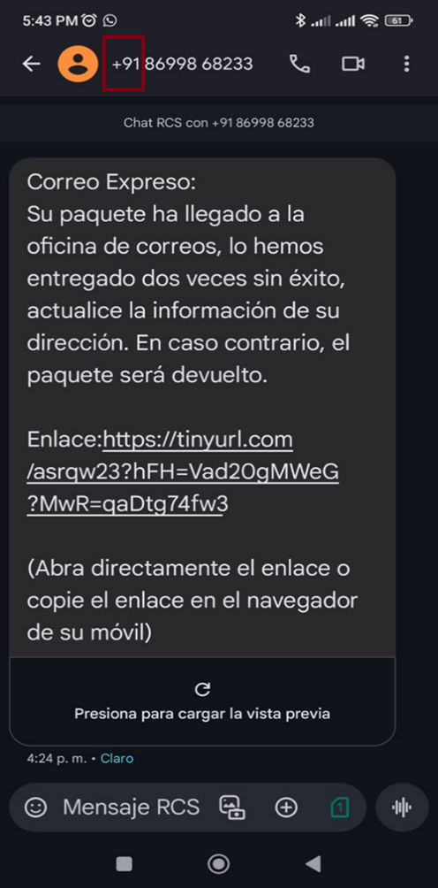
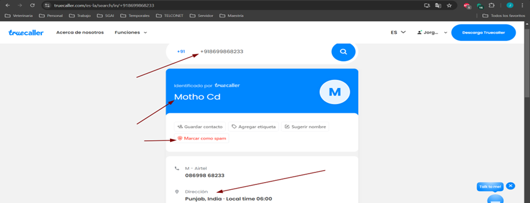
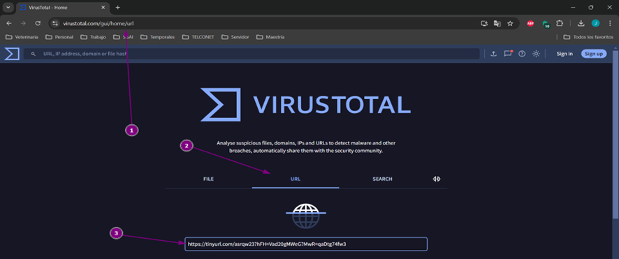
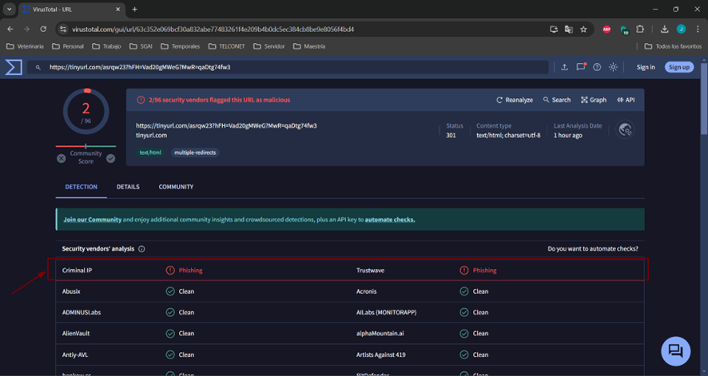
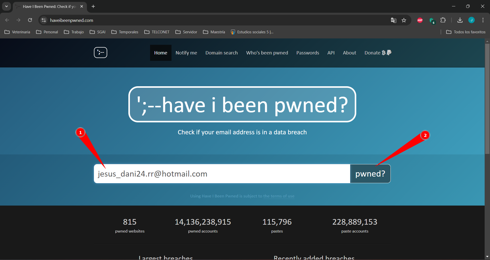
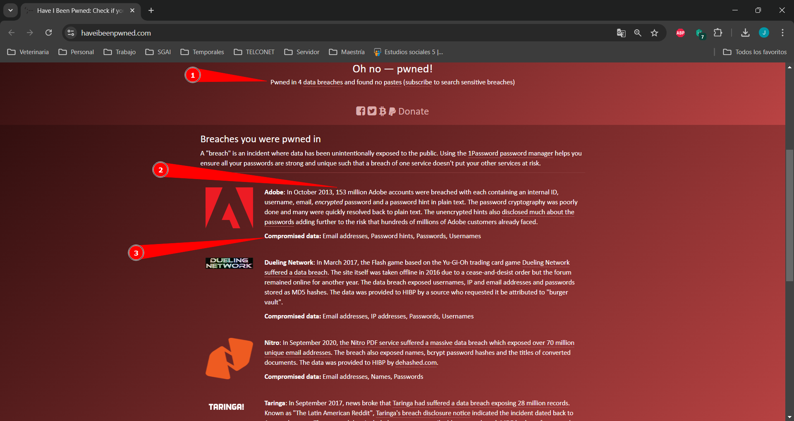

¿Qué es el Phishing?
El phishing es una táctica utilizada por ciberdelincuentes para engañar a las personas y hacer que compartan información personal, contraseñas o datos bancarios. Los atacantes se hacen pasar por entidades legítimas a través de correos electrónicos, mensajes de texto o sitios web falsos.
Ejemplos Comunes de Phishing
- Correos electrónicos que parecen ser de tu proveedor de servicios, solicitando que verifiques tu cuenta.
- Mensajes de texto que afirman que has ganado un premio y piden que hagas clic en un enlace para reclamarlo.
- Páginas web que imitan sitios populares como redes sociales o servicios en línea, solicitando tus credenciales de inicio de sesión.
¿Cómo Detectar un Intento de Phishing?
- Verifica el remitente: Revisa cuidadosamente la dirección de correo o el número del remitente. Si parece sospechoso o desconocido, desconfía.
- Inspecciona los enlaces: Pasa el cursor sobre los enlaces para ver la URL completa antes de hacer clic. Si no coincide con la dirección oficial, no interactúes.
- Cuidado con la urgencia: Los mensajes que te presionan para actuar rápidamente suelen ser intentos de phishing.
- Errores de gramática y ortografía: Correos mal redactados pueden ser indicativos de un intento de fraude.
Ejemplo de Smishing con Truecaller
El Smishing es un tipo de phishing que se realiza mediante mensajes de texto. Al recibir un mensaje sospechoso, es importante verificar el remitente. Por ejemplo, los primeros dígitos suelen indicar el país de origen. Los mensajes de smishing generalmente intentan presionarte, indicando acciones negativas como bloquear tu cuenta o perder un paquete.
Para analizar el remitente, puedes usar la herramienta de Truecaller para colocar el número y verificar su origen. Esta herramienta también permite reportar el número como spam, lo que ayuda a otros usuarios.
Ejemplo de uso de VirusTotal: Análisis de enlaces
Si el mensaje contiene un enlace, evita abrirlo. En caso de haberlo abierto por error, cierra el enlace inmediatamente y no ingreses información. Copia el enlace sospechoso y utiliza la herramienta web VirusTotal para analizar su seguridad. Solo coloca la URL en el campo de análisis y espera el reporte.
Una vez finalizado el análisis, se muestra un reporte que, si la URL es peligrosa, aparecerá en color rojo indicando que contiene Phishing.
Verificación de Correos Comprometidos con Have I Been Pwned
Para saber si tu correo ha sido comprometido en una brecha de datos, usa Have I Been Pwned. Introduce tu correo y revisa si aparece en alguna filtración.
En caso afirmativo, cambia tus contraseñas y habilita la autenticación en dos pasos.
Identificación de Sitios Falsos
Una de las técnicas más comunes de los ciberdelincuentes es crear sitios web falsos que se parecen al sitio oficial de Facebook para capturar credenciales. Estos sitios suelen tener pequeñas diferencias en la URL o en la apariencia que son difíciles de detectar si no se presta atención. A continuación, te mostramos cómo reconocer estos sitios falsos:
- Revisa la URL: Asegúrate de que la URL del sitio sea
https://www.facebook.com. Cualquier variación, comohttps://faceboook-login.comohttps://login-facebook.net, es sospechosa. Los sitios falsos a menudo incluyen ligeros cambios en las letras o palabras adicionales. - Verifica el candado de seguridad: Un sitio legítimo debe mostrar un ícono de candado en la barra de direcciones y empezar con
https://. Aunque algunos sitios falsos pueden tener el candado, siempre es importante corroborar la URL completa. - Observa la apariencia: Los sitios falsos a veces tienen elementos que no se cargan bien o se ven desalineados. Si notas que algo no se ve bien, cierra la página de inmediato.
¿Consejos para Mantenerte Seguro?
- No compartas información sensible: Nunca des contraseñas, números de tarjetas, o datos personales en respuesta a un correo o mensaje no solicitado.
- Habilita la autenticación en dos pasos (2FA): Agrega una capa extra de seguridad a tus cuentas para protegerlas incluso si tu contraseña es comprometida.
- Mantén tu software actualizado: Asegúrate de que tu sistema operativo, navegadores y aplicaciones tengan las últimas actualizaciones de seguridad.
- Utiliza un antivirus confiable: Protege tu dispositivo con software de seguridad que pueda detectar y bloquear intentos de phishing.
¿Qué Hacer si Encuentras un Intento de Phishing?
- No interactúes: No respondas ni hagas clic en enlaces o archivos adjuntos sospechosos.
- Reporta el incidente: Notifica a la entidad legítima o a tu equipo de seguridad informática sobre el intento de phishing.
- Elimina el mensaje: Después de reportarlo, borra el mensaje de tu bandeja de entrada para evitar futuros riesgos.
- Cambia tus contraseñas: Si has proporcionado información personal, actualiza tus contraseñas de inmediato.